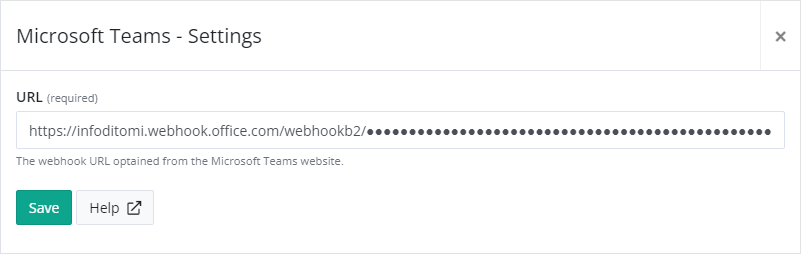

1. Get the incoming webhook URL for your Connector.
Copy the following URL to save it to the Clipboard. You'll need this URL when you configure the connector.
2. Install the Microsoft Teams app on elmah.io.
Log into elmah.io and go to the log settings. Click the Apps tab. Locate the Microsoft Teams app and click the Install button. In the overlay, paste the URL from the previous step:
